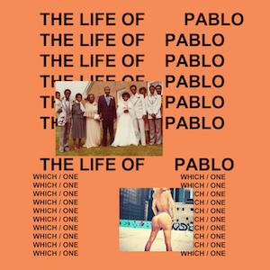

<div class="flexsearch">
		<div class="flexsearch--wrapper">
			<form class="flexsearch--form" action="#"  method="post">
				<div class="flexsearch--input-wrapper">
					<input class="flexsearch--input"  type="search" placeholder="search">
				</div>
				<input class="flexsearch--submit" id="submitbutton" type="submit"  value="&#10140;"/>
			</form>
		</div>
  </head>
<body>

<div id="mySidenav" class="sidenav container-fluid">
  <a href="javascript:void(0)" class="closebtn" onclick="closeNav()">&times;</a>
  <div class="imgwrapper">
    
  </div>
</div>


<script src="jquery.js" type="text/javascript"></script>
<script>

</script>


<link rel="stylesheet" href="//maxcdn.bootstrapcdn.com/bootstrap/3.3.1/css/bootstrap.min.css"/>

<style>


/***********************
 * Essential Structure *
 ***********************/
.flexsearch--wrapper {
	height: auto;
	width: auto;
	max-width: 100%;
	overflow: hidden;
	background: transparent;
  position: fixed;
  position: fixed;
  top: 50%;
  left: 50%;
  /* bring your own prefixes */
  transform: translate(-50%, -50%);
}


.flexsearch--form {
	overflow: hidden;
	position: relative;
}

.flexsearch--input-wrapper {
	padding: 0 66px 0 0; /* Right padding for submit button width */
	overflow: hidden;
}

.flexsearch--input {
  width: 100%;
}

/***********************
 * Configurable Styles *
 ***********************/
.flexsearch {
  padding: 0 25px 0 200px; /* Padding for other horizontal elements */
}

.flexsearch--input {
  -webkit-box-sizing: content-box;
	-moz-box-sizing: content-box;
	box-sizing: content-box;
 	height: 60px;
  padding: 0 46px 0 10px;
	border-color: #888;
  border-radius: 35px; /* (height/2) + border-width */
  border-style: solid;
	border-width: 5px;
  margin-top: 15px;
  color: #333;
  font-family: 'Helvetica', sans-serif;
	font-size: 26px;
	-webkit-appearance: none;
	-moz-appearance: none;

  transition: background 0.5s ease-in-out;

}
.flexsearch--input:hover {
  background: #808080;

}
.flexsearch--submit {
  position: absolute;
	right: 0;
	top: 0;
	display: block;
	width: 60px;
	height: 60px;
  padding: 0;
  border: none;
	margin-top: 20px; /* margin-top + border-width */
  margin-right: 5px; /* border-width */
	background: transparent;
  color: #888;
  font-family: 'Helvetica', sans-serif;
  font-size: 40px;
  line-height: 60px;
}

.flexsearch--input:focus {
  outline: none;
  border-color: #333;
}

.flexsearch--input:focus.flexsearch--submit {
 	color: #333;
}

.flexsearch--submit:hover {
  color: #333;
  cursor: pointer;
}

::-webkit-input-placeholder {
	color: #888;
}

input:-moz-placeholder {
  color: #888
}


/****************
 * Pretify demo *
 ****************/
.h1 {
  float: left;
  margin: 25px;
  color: #333;
  font-family: 'Helvetica', sans-serif;
  font-size: 45px;
  font-weight: bold;
  line-height: 45px;
  text-align: center;
}
</style>

<style>
body {
    font-family: "Lato", sans-serif;
}

.sidenav {
    height: 100%;
    width: 250px;
    position: fixed;
    z-index: 1;
    top: 0;
    left: 0;
    background-color: #111;
    overflow-x: hidden;
    transition: 0.5s;
    padding-top: 60px;
}

.sidenav a {
    padding: 8px 8px 8px 32px;
    text-decoration: none;
    font-size: 25px;
    color: #818181;
    display: block;
    transition: 0.3s;
}

.sidenav a:hover, .offcanvas a:focus{
    color: #f1f1f1;
}

.sidenav .closebtn {
    position: absolute;
    top: 0;
    right: 25px;
    font-size: 36px;
    margin-left: 50px;
}

@media screen and (max-height: 450px) {
  .sidenav {padding-top: 15px;}
  .sidenav a {font-size: 18px;}
}

.imgwrapper {
   width: 80%;
}
.pablo {
	width: 200px;
	height: 200px;
	display: inline;
	margin-left: 22px;
	margin-right: auto;
}

</style>
